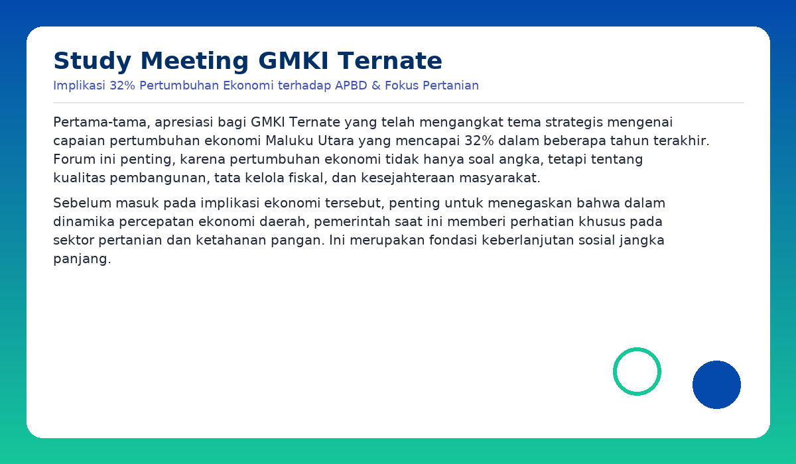

Pertama-tama, apresiasi bagi GMKI Ternate yang telah mengangkat tema strategis mengenai capaian pertumbuhan ekonomi Maluku Utara yang mencapai 32% dalam beberapa tahun terakhir. Forum ini penting, karena pertumbuhan ekonomi tidak hanya soal angka, tetapi tentang kualitas pembangunan, tata kelola fiskal, dan kesejahteraan masyarakat. Sebelum masuk pada implikasi ekonomi tersebut, penting untuk menegaskan bahwa dalam dinamika percepatan ekonomi daerah, pemerintah saat ini memberi perhatian khusus pada sektor pertanian dan ketahanan pangan. Ini merupakan fondasi keberlanjutan sosial jangka panjang. Mengapa sektor pertanian? Karena ketergantungan pangan dari luar daerah masih tinggi, biaya logistik mempengaruhi harga kebutuhan pokok, dan kemampuan rumah tangga untuk mengakses pangan bergizi menjadi kunci kualitas manusia Maluku Utara. Data lapangan menunjukkan program penambahan area tanam padi gogo, padi sawah melalui APBD dan APBN, serta jagung, hingga perluasan areal pangan bersama TNI dan pemerintah pusat. Upaya ke depan termasuk irigasi desa, benih unggul lokal, mekanisasi alat, dan penguatan lumbung pangan kampung serta koperasi tani.
Pertumbuhan mencapai 32% beberapa waktu lalu merupakan lompatan signifikan yang menempatkan Maluku Utara sebagai salah satu provinsi dengan akselerasi ekonomi tertinggi di Indonesia. Namun, perlu dipahami: sumber utama pertumbuhan berasal dari sektor pengolahan mineral dan investasi industri besar, bukan dari konsumsi masyarakat atau sektor UMKM. Impliksinya dari struktur pertumbuhan adalah: • pertumbuhan tinggi tidak otomatis memperbesar APBD, karena sektor penyangga pertumbuhan banyak berada pada kewenangan fiskal pusat; • kontribusi industri besar terhadap PAD masih terbatas dibanding dampaknya pada PDRB; • potensi pertumbuhan harus dikelola agar menghasilkan spillover effect bagi ekonomi rakyat. Dengan kata lain, tugas pemerintah adalah mengkonversi pertumbuhan menjadi kesejahteraan, bukan sekadar mencatat kinerja makro.
Di tengah pertumbuhan tinggi, tata kelola fiskal daerah diarahkan pada:
Dalam konteks tata kelola tersebut, perlu disampaikan bahwa prinsip-prinsip pengelolaan APBD yang berorientasi pada pertumbuhan ekonomi, pembukaan lapangan kerja, dan pengurangan kemiskinan sesungguhnya telah berjalan di Maluku Utara. Pendekatan ini diterjemahkan ke dalam kebijakan nyata, termasuk pada sektor pertanian sebagai sektor prioritas melalui penambahan luas tanam, dukungan sarana produksi, pemberdayaan petani, dan penciptaan rantai ekonomi desa yang mampu memberikan nilai tambah serta peluang kerja bagi masyarakat lokal. Dengan demikian, arah fiskal daerah tidak hanya mengikuti prinsip pembangunan fiskal modern, tetapi juga memastikan asas keadilan dan keberlanjutan di akar rumput. APBD dalam konteks ini berfungsi sebagai alat distribusi manfaat pertumbuhan, bukan sekadar daftar kegiatan tahunan.
Kesejahteraan rakyat menjadi indikator nyata. Karena itu, langkah strategis diarahkan pada:
Dengan demikian, pertumbuhan bukan hanya naik di grafik, tetapi hadir di meja makan rakyat dan masa depan anak-anak di Maluku Utara.
GMKI memiliki posisi moral, intelektual, dan sosial dalam dinamika ini. Ruang kontribusi pemuda meliputi:
GMKI bukan hanya pengamat, tetapi mitra pembangunan yang memegang kompas etika dan kecerdasan sosial.
Pertumbuhan ekonomi 32% adalah peluang besar bagi Maluku Utara. Tantangannya adalah bagaimana menjadikannya nilai nyata bagi rakyat — melalui tata kelola keuangan yang efektif, kebijakan publik yang inklusif, dan prioritas pembangunan pada sektor yang menyentuh kehidupan masyarakat, terutama ketahanan pangan dan pertanian. Sementara itu, pemuda — khususnya GMKI — bukan hanya pewaris masa depan, tetapi penggerak perubahan hari ini. Kolaborasi, kesadaran kritis, dan semangat pelayanan menjadi kunci untuk memastikan Maluku Utara tumbuh bukan hanya cepat, tetapi adil, kuat, dan bermartabat. Terima kasih.